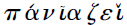

第一篇 存在论（Die Lehre vom Sein）
§84
存在只是潜在的概念。存在的各个规定或范畴都可用是去指谓。把存在的这些规定分别开来看，它们是彼此互相对立的。从它们进一步的规定（或辩证法的形式）来看，它们是互相过渡到对方。这种向对方过渡的进程，一方面是一种向外的设定，因而是潜在存在着的概念的开展，并且同时也是存在的向内回复或深入于其自己本身。因此在存在论的范围内去解释概念，固然要发挥存在的全部内容，同时也要扬弃存在的直接性或扬弃存在本来的形式。
§85
存在自身以及从存在中推出来的各个规定或范畴，不仅是属于存在的范畴，而且是一般逻辑上的范畴。这些范畴也可以看成对于绝对的界说，或对于上帝的形而上学的界说。然而确切地说，却总是只有第一和第三范畴可以这样看，因为第一范畴表示一个范围内的简单规定，而第三范畴则表示由分化而回复到简单的自身联系。因为对上帝予以形而上学的界说，就是把他的本性表达在思想里；但是逻辑学却包括了一切具有思想形式的思想。反之，第二范畴则表示一个范围内的分化阶段，因此只是对于有限事物的界说。但当我们应用界说的形式时，这形式便包含有一种基质（Substrat）浮起在我们观念中的意思。这样一来，即使绝对——这应是用思想的意义和形式去表达上帝的最高范畴——与用来界说上帝的谓词或特定的实际思想中的名词相比，也不过仅是一意谓的思想，一本身无确定性的基质罢了。因为这里所特别讨论的思想或事情，只是包括在谓词里，所以命题的形式，正如刚才所说的那个主体或绝对，都完全是某种多余的东西（比较§31和下面讨论判断的章节〔§166以下〕）。
附释
：逻辑理念的每一范围或阶段，皆可证明其自身为许多思想范畴的全体，或者为绝对理念的一种表述。譬如在“存在”的范围内，就包含有质、量、和尺度三个阶段。质首先就具有与存在相同一的性质，两者的性质相同到这样程度，如果某物失掉它的质，则这物便失其所以为这物的存在。反之，量的性质便与存在相外在，量之多少并不影响到存在。譬如，一所房子，仍然是一所房子，无论大一点或小一点。同样，红色仍然是红色，无论深一点或浅一点。尺度第三阶段的存在，是前两个阶段的统一，是有质的量。一切事物莫不有“尺度”，这就是说，一切事物都是有量的，但量的大小并不影响它们的存在。不过这种“不影响”同时也是有限度的。通过更加增多，或更加减少，就会超出此种限度，从而那些事物就会停止其为那些事物。于是从尺度出发，就可进展到理念的第二个大范围，本质。
这里所提及的“存在”的三个形式，正因为它们是最初的，所以又是最贫乏的，亦即最抽象的。直接的感性意识，因为它同时包含有思想的成分，所以特别局限在质和
量的抽象范畴。这种感性意识通常被认作最具体的，因而同时也常被看成是最丰富的。但这仅是就其材料而言，倘若就它所包含的思想内容来看，其实可以说是最贫乏的和最抽象的。
A.质（Die Qualität）
（a）存在（Sein）
§86
纯存在或纯有之所以当成逻辑学的开端，是因为纯有既是纯思，又是无规定性的单纯的直接性，而最初的开端不能是任何间接性的东西，也不能是得到了进一步规定的东西。
〔说明〕
只要我们能够简单地意识到开端的性质所包含的意义，那么，一切可以提出来反对用抽象空洞的存在或有作为逻辑学开端的一切怀疑和责难，就都会消失。存在或有可以界说为“我即是我”，为绝对无差别性或同一性等等。只要感觉到有从绝对确定性，亦即自我确定性开始，或从对于绝对真理的界说或直观开始的必要，则这些形式或别的同类的形式就可以看成必然是最初的出发点。但是由于这些形式中每一个都包含着中介性，因此不能是真正的最初开端。因为中介性包含由第一进展到第二，由此一物出发到别的一些有差别的东西的过程。如果“我即是我”，甚或理智的直观真的被认作只是最初的开端，则它在这单纯的直接性里仅不过是有罢了。反之，纯有若不再是抽象的直接性，而是包含间接性在内的“有”，则是纯思维或纯直观。
如果我们宣称存在或有是绝对的一个谓词，则我们就得到绝对的第一界说，即：“绝对就是有”。这就是纯全（在思想中）最先提出的界说，最抽象也最空疏。这就是爱利亚学派所提出来的界说，同时也是最著名的界说，认上帝是一切实在的总和。简言之，依这种看法，我们须排除每一实在内的限制，这样才可以表明，只有上帝才是一切实在中之真实者，最高的实在。如果实在已包含有反思在内，那么，当耶柯比说斯宾诺莎的上帝是一切有限存在中的存在原理时，就已经直接说出这种看法了。
附释一
：开始思维时，除了纯粹无规定性的思想外，没有别的，因为在规定性中已包含有“其一”与“其他”；但在开始时，我们尚没有“其他”。这里我们所有的无规定性的思想乃是一种直接性，不是经过中介的无规定性；不是一切规定性的扬弃，而是无规定性的直接性，先于一切规定性的无规定性，最原始的无规定性。这就是我们所说的“有”。这种“有”是不可感觉，不可直观，不可表象的，而是一种纯思，并因而以这种纯思作为逻辑学的开端。本质也是一无规定性的东西，但本质乃是通过中介的过程已经扬弃了规定并把它包括在自身内的无规定性。
附释二
：在哲学史上，逻辑理念的不同阶段是以前后相继的不同的哲学体系的姿态而出现，其中每一体系皆基于对绝对的一个特殊的界说。正如逻辑理念的开展是由抽象进展到具体，同样在哲学史上，那最早的体系每每是最抽象的，因而也是最贫乏的。故早期的哲学体系与后来的哲学体系的关系，大体上相当于前阶段的逻辑理念与后阶段的逻辑理念的关系，这就是说，早期的体系被后来的体系所扬弃，并被包括在自身之内。这种看法就表明了哲学史上常被误解的现象——一个哲学体系为另一哲学体系所推翻，或前面的哲学体系被后来的哲学体系推翻的真意义。每当说到推翻一个哲学体系时，总是常常被认为只有抽象的否定的意义，以为那被推翻的哲学已经毫无效用，被置诸一旁，而根本完结了。如果真是这样，那末，哲学史的研究必定会被看成异常苦闷的工作，因为这种研究所显示的，将会只是所有在时间的进程里发生的哲学体系如何一个一个地被推翻的情形。虽然我们应当承认，一切哲学都曾被推翻了，但我们同时也须坚持，没有一个哲学是被推翻了的，甚或没有一个哲学是可以推翻的。这有两方面的解释：第一、每一值得享受哲学的名义的哲学，一般都以理念为内容；第二、每一哲学体系均可看作是表示理念发展的一个特殊阶段或特殊环节。因此所谓推翻一个哲学，意思只是指超出了那一哲学的限制，并将那一哲学的特定原则降为较完备的体系中的一个环节罢了。所以，哲学史的主要内容并不是涉及过去，而是涉及永恒及真正现在的东西。而且哲学史的结果，不可与人类理智活动的错误陈迹的展览相比拟，而只可与众神像的庙堂相比拟。这些神像就是理念在辩证发展中依次出现的各阶段。所以哲学史总有责任去确切指出哲学内容的历史开展与纯逻辑理念的辩证开展一方面如何一致，另一方面又如何有出入。但这里须首先提出的，就是逻辑开始之处实即真正的哲学史开始之处。我们知道，哲学史开始于爱利亚学派，或确切点说，开始于巴曼尼得斯的哲学。因为巴曼尼得斯认“绝对”为“有”，他说：“惟‘有’在，‘无’不在”。这须看成是哲学的真正开始点，因为哲学一般是思维着的认识活动，而在这里第一次抓住了纯思维，并且以纯思维本身作为认识的对象。
人类诚然自始就在思想，因为只有思维才使人有以异于禽兽，但是经过不知若干千年，人类才进而认识到思维的纯粹性，并同时把纯思维理解为真正的客观对象。爱利亚学派是以勇敢的思想家著称。但与这种表面的赞美相随的，常常就有这样的评语，即这些哲学家太趋于极端了，因为他们只承认只有“有”是真的，而否认意识中一切别的对象的真理性。说我们不应老停滞在单纯的“有”的阶段，这当然是很对的。但认为我们意识中别的内容好象是在“有”之旁和在“有”之外似的，或把“有”与某种别的东西等量齐观，说有“有”，某种别的东西也“有”，那就未免太缺乏思想了。真正的关系应该是这样：有之为有并非固定之物，也非至极之物，而是有辩证法性质，要过渡到它的对方的。“有”的对方，直接地说来，也就是无。总结起来，“有”是第一个纯思想，无论从任何别的范畴开始（如从我即是我，从绝对无差别，或从上帝自身开始），都只是从一个表象的东西，而非从一个思想开始；而且这种出发点就其思想内容来看，仍然只是“有”。
§87
但这种纯有是纯粹的抽象，因此是绝对的否定。这种否定，直接地说来，也就是无。
〔说明〕
（1）由此便推演出对于绝对的第二界说：绝对即是无。其实，这个界说所包含的意思不外说：物自身是无规定性的东西，完全没有形式因而是毫无内容的。或是说，上帝只是最高的本质，此外什么东西也不是。因为这实无异于说，上帝仍然只是同样的否定性。那些佛教徒认作万事万物的普遍原则、究竟目的和最后归宿的“无”，也是同样的抽象体。
（2）如果把这种直接性中的对立表述为有与无的对立，因而便说这种对立为虚妄不实，似乎未免太令人诧异，以致使得人不禁想要设法去固定“有”的性质，以防止它过渡到“无”。为达到这目的起见，我们的反思作用自易想到为“有”去寻求一个确定的界说，以便把“有”与“无”区别开。譬如，我们认“有”为万变中之不变者，为可以容受无限的规定之质料等，甚或漫不加思索地认“有”为任何个别的存在，任何一个感觉中或心灵中偶然的东西。但所有这些对“有”加以进一步较具体的规定，均足以使“有”失其为刚才所说的开始那种直接性的纯有。只有就“有”作为纯粹无规定性来说，“有”才是无——一个不可言说之物；它与“无”的区别，只是一个单纯的指谓上的区别。
凡此所说，目的只在于使人意识到这些开始的范畴只是些空虚的抽象物，有与无两者彼此都是同样的空虚。我们想要在“有”中，或在“有”和“无”两者中，去寻求一个固定的意义的要求，即是对“有”和“无”加以进一步的发挥，并给予它们以真实的，亦即具体的意义的必然性。这种进展就是逻辑的推演，或按照逻辑次序加以阐述的思维过程。那能在“有”和“无”中发现更深一层含义的反思作用，即是对此种含义加以发挥（但不是偶然的而是必然的发挥）的逻辑思维。因此“有”和“无”获得更深一层的意义，只可以看成是对于绝对的一个更确切的规定和更真实的界说。于是这样的界说便不复与“有”和“无”一样只是空虚的抽象物，而毋宁是一个具体的东西，在其中，“有”和“无”两者皆只是它的环节。“无”的最高形式，就其为一个独立的原则而言，可以说就是“自由”。这种自由，虽是一种否定，但因为它深入于它自身的最高限度，自己本身即是一种肯定，甚至即是一种绝对的肯定。
附释
：“有”与“无”最初只是应该有区别罢了，换言之，两者之间的区别最初只是潜在的，还没有真正发挥出来。一般讲来，所谓区别，必包含有二物，其中每一物各具有一种为他物所没有的规定性。但“有”既只是纯粹无规定者，而“无”也同样的没有规定性。因此，两者之间的区别，只是一指谓上的区别，或完全抽象的区别，这种区别同时又是无区别。在他种区别开的东西中，总会有包括双方的共同点。譬如，试就两个不同“类”的事物而言，类便是两种事物间的共同点。依据同样的道理，我们说，有自然存在，也有精神存在，在这里，“存在”就是两者间的共同点。反之，“有”与“无”的区别，便是没有共同基础的区别。因此两者之间可以说是没有区别，因为没有基础就是两者共同的规定。如果有人这样说，“有”与“无”既然两者都是思想，则思想便是两者的共同基础，那末，说这话的人便忽视了，“有”并不是一特殊的、特定的思想，而毋宁是一完全尚未经规定、因此尚与“无”没有区别的思想。——人们虽然也可以将“有”表象为绝对富有，而将“无”表象为绝对贫乏。但是，如果我们试观察全世界，我们说在这个世界中一切皆有，外此无物，这样我们便抹煞了所有的特定的东西，于是我们所得的，便只是绝对的空无，而不是绝对的富有了。同样的批评也可以应用到把上帝界说为单纯的“有”的说法上面。这种界说与佛教徒的界说，即认上帝为“无”，因而推出人为了与上帝成为一体，就必须毁灭他自己的结论，表面上好似对立，但实际上是基于同样的理由。
§88
如果说，无是这种自身等同的直接性，那末反过来说，有正是同样的东西。因此“有”与“无”的真理，就是两者的统一。这种统一就是变易（Das Werden）。
〔说明〕
（1）有即是无这命题，从表象或理智的观点看来，似乎是太离奇矛盾了，甚至也许会以为这种说法，其用意简直是在开玩笑。要承认这话为真，事实上是思想所最难作到的事。因为“有”与“无”就其整个直接性看来，乃是根本对立的。这就是说，两项中任何一项都没有设定任何规定，足以包含它和另一项的联系。但有如上节所指出的那样，两者也包含有一共同的规定（即无规定性）。从这点看来，推演出“有”与“无”的统一性，乃完全是分析的。一般的哲学推演的整个进程，也是这样。哲学推演的进程，如果要有方法性或必然性的话，只不过是把蕴涵在概念中的道理加以明白的发挥罢了。说“有”与“无”是同一的，与说“有”与“无”也是绝对不同的，一个不是另一个，都一样是对的。但是，既然有与无的区别在这里还没有确定，因为它们还同样是直接的东西，那末，它们的区别，真正讲来，是不可言说的，只是指谓上的区别。
（2）用不着费好大的机智，即可以取笑“有即是无”这一命题，或可以引伸出一些不通的道理来，并误认它们为应用这命题所推出的结论，所产生的效果。例如反对这命题的人可以说，如果有与无无别，那末，我的房子，我的财产，我所呼吸的空气，我所居的城市、太阳、法律、精神、上帝，不管它们存在（有）或不存在（无），都是一样的了。在上面这些例子里提出反对意见的人，有一部分人是从个人的特殊目的和某一事物对他个人的利益出发，去问对自己有利的事情的有或无，对他有什么差别。其实哲学的教训正是要使人从那无穷的有限目的与个人愿望中解放出来，并使他觉得不管那些东西存在或不存在，对他简直完全无别。但是，一般讲来，只要一提到一个有实质的内容，便因而与别的存在、目的等等建立一种联系，在这个联系中，别的存在、目的等就成了起作用的前提，这时就可以根据这些前提去判断一个特定内容的有或无是否也是一样的。这样一来，一个充满内容的区别便代替了有与无的空洞区别。——但另一部分人却对主要的目的、绝对的存在和理念用单纯的有与非有的范畴去说明。但这种具体的对象不仅是存在着或者非存在着，而另有其某种别的较丰富的内容。象有与无这样的空疏的抽象概念，——它们是最空疏的概念，因为它们只是开始的范畴，——简直不能正确地表达这种对象的本性。有真实内容的真理远远超出这些抽象概念及其对立。每当人们用有与无的概念去说明一个具体的东西时，便会引起由于不用思想而常犯的错误，以为我们心目中除了现在所说及的单纯抽象的有与无之外还另有某种事物的表象。
（3）也许有人会这样说：我们不能形成有与无统一的概念。但须知，有与无统一的概念已于前面几节里阐明了，此外更无别的可说了。要想掌握有无统一的性质，就必须理解前几节所说的道理。也许反对者所了解的概念，比真正的概念所包含的意义还更广泛些。他所说的概念大约是指一个较复杂、较丰富的意识，一个表象而言。他以为这样的概念是可以作为一个具体的事例表达出来的，而这种事例也是思想于其通常的运用里所熟习的。只要“不能形成概念”仅表示不习惯于坚执持抽象思想而不混之以感觉，或不习惯于掌握思辨的真理，那末，只须说哲学知识与我们日常生活所熟习的知识以及其他科学的知识，是的确不同类的，就可解答明白了。但是如果“不能形成概念”只是指我们不能想象或表象有与无的统一，那末这话事实上并不可靠，因为宁可说每人对于有无的统一均有无数多的表象。说我们没有有无统一的表象，只能指我们不能从任何一个关于有无统一的表象里认识有无统一的概念，也不知道这些表象是代表有无统一的概念的一个例子。足以表示有无统一的最接近的例子是变易（Das Werden）。人人都有一个变易的表象，甚至都可承认变易是一个表象。他并可进而承认，若加以分析，则变易这个表象，包含有有的规定，同时也包含与有相反的无的规定；而且这两种规定在变易这一表象里又是不可分离的。所以，变易就是有与无的统一。——另一同样浅近的例子就是开始这个观念。当一种事情在其开始时，尚没有实现，但也并不是单纯的无，而是已经包含它的有或存在了。开始本身也是变易，不过“开始”还包含有向前进展之意。——为了符合于科学的通常进程起见，人们可以让逻辑学从纯思维的“开始”这一观念出发，也就是从“开始本身”这一观念开始，并对“开始”这一观念进行分析。由于这样分析的结果，人们或许更易于接受有与无是不可分的统一体的理论。
（4）还有一点须得注意，就是“有与无是同样的”，或“有无统一”这种说法，以及其他类似的统一体，如主客统一等，其令人反对，也颇有道理。因为这种说法的偏颇不当之处在于太强调统一，而对于两者之间仍然有差异存在（因为，此说所要设定的统一，例如，有与无的统一），却未同时加以承认和表达出来。因此似乎太不恰当地忽视了差异，没有考虑到差异。其实，思辨的原则是不能用这种命题的形式正确表达的。因为须通过差异，才能理解统一；换言之，统一必须同时在当前的和设定起来的差异中得到理解。变易就是有与无的结果的真实表达，作为有与无的统一。变易不仅是有与无的统一，而且是内在的不安息，——这种统一不仅是没有运动的自身联系，而且由于包含有“有”与“无”的差异性于其内，也是自己反对自己的。——反之，定在就是这种的统一，或者是在这种统一形式中的变易。因此定在是片面的，是有限的。在定在中，有与无的对立好象是消失了，其实，对立只是潜在地包含在统一中，而尚未显明地设定在统一中罢了。
（5）有过渡到无，无过渡到有，是变易的原则，与此原则相反的是泛神论，即“无不能生有，有不能变无”的物质永恒的原则。古代哲学家曾经见到这简单的道理，即“无不能生有，有不能变无”的原则，事实上将会取消变易。因为一物从什么东西变来和将变成什么东西乃是同一的东西。这个命题只不过是表现在理智中的抽象同一性原则。但不免显得奇异的是，我们现时也听见“无不能生有，有不能变无”的原则完全自由地传播着，而传播的人毫没有意识到这些原则是构成泛神论的基础，并且也不知道古代哲学家对于这些原则已经发挥尽致了。
附释
：变易是第一个具体思想，因而也是第一个概念，反之，有与无只是空虚的抽象。所以当我们说到“有”的概念时，我们所谓“有”也只能指“变易”，不能指“有”，因为“有”只是空虚的“无”；也不能指“无”，因为“无”只是空虚的“有”。所以“有”中有“无”，“无”中有“有”；但在“无”中能保持其自身的“有”，即是变易。在变易的统一中，我们却不可抹煞有与无的区别，因为没有了区别，我们将会又返回到抽象的“有”。变易只是“有”按照它的真理性的“设定存在”（Gesetztsein）。
我们常常听见说思维〔思〕与存在〔有〕是对立的。对于这种说法，我们首先要问对存在或“有”要怎样理解？如果我们采取反思对于存在所下的界说，那末，我们只能说存在是纯全同一的和肯定的东西。现在我们试考察一下思维，则我们就不会看不见，思维也至少是纯全与其自身同一的东西。故存在与思维，两者皆具有相同的规定。但存在与思维的这种同一却不能就其具体的意思来说，我们不能因而便说：一块石头既是一种存在，与一个能思维的人是相同的。一个具体事物总是不同于一个抽象规定本身的。当我们说“存在”时，我们并没有说到具体事物，因为“存在”只是一纯全抽象的东西。而且，按照这里所说的，关于上帝存在（上帝是本身无限具体的存在）的问题也就没有什么意义了。
变易既是第一个具体的思想范畴，同时也是第一个真正的思想范畴。在哲学史上，赫拉克利特的体系约相当于这个阶段的逻辑理念。当赫拉克利特说：“一切皆在流动”（
）时，他已经道出了变易是万有的基本规定。反之，爱利亚学派的人，有如前面所说，则认“有”、认坚硬静止的“有”为唯一的真理。针对着爱利亚学派的原则，赫拉克利[63]于是进一步说：“有比起非有来并不更多一些”，（ ）。这句话已说出了抽象的“有”之否定性，说出了“有”与那个同样站不住的抽象的“无”在变易中所包含的同一性。从这里我们同时还可以得到一个哲学体系为另一哲学体系所真正推翻的例子。对于一个哲学体系加以真正的推翻，即在于揭示出这体系的原则所包含的矛盾，而将这原则降为理念的一个较高的具体形式中组成的理想环节。但更进一层说，变易本身仍然是一个高度贫乏的范畴，它必须进一步深化，并充实其自身。例如，在生命里，我们便得到一个变易深化其自身的范畴。生命是变易，但变易的概念并不能穷尽生命的意义。在较高的形式里，我们还可见到在精神中的变易。精神也是一变易，但较之单纯的逻辑的变易，却更为丰富与充实。构成精神的统一的各环节，并不是有与无的单纯抽象概念，而是逻辑理念和自然的体系。
）。这句话已说出了抽象的“有”之否定性，说出了“有”与那个同样站不住的抽象的“无”在变易中所包含的同一性。从这里我们同时还可以得到一个哲学体系为另一哲学体系所真正推翻的例子。对于一个哲学体系加以真正的推翻，即在于揭示出这体系的原则所包含的矛盾，而将这原则降为理念的一个较高的具体形式中组成的理想环节。但更进一层说，变易本身仍然是一个高度贫乏的范畴，它必须进一步深化，并充实其自身。例如，在生命里，我们便得到一个变易深化其自身的范畴。生命是变易，但变易的概念并不能穷尽生命的意义。在较高的形式里，我们还可见到在精神中的变易。精神也是一变易，但较之单纯的逻辑的变易，却更为丰富与充实。构成精神的统一的各环节，并不是有与无的单纯抽象概念，而是逻辑理念和自然的体系。
（b）定在（Dasein）
§89
在变易中，与无为一的有及与有为一的无，都只是消逝着的东西。变易由于自身的矛盾而过渡到有与无皆被扬弃于其中的统一。由此所得的结果就是定在〔或限有〕。
〔说明〕
在这第一个例子里，我们必须长此记住前面§82及说明里所说的话。要想为知识的进步与发展奠定基础，唯一的方法，即在于坚持结果的真理性。（天地间绝没有任何事物，我们不能或不必在它里面指出矛盾或相反的规定。理智的抽象作用强烈地坚持一个片面的规定性，而且竭力抹煞并排斥其中所包含的另一规定性的意识。）只要在任何对象或概念里发现了矛盾，人们总惯常作这样的推论，说：这个对象既然有了矛盾，所以它就不存在。如芝诺首先指出运动的矛盾，便推论没有运动。又如古代哲学家根据太一〔或太极〕为不生不灭之说，因而认为生与灭，作为变易的两方面，是虚妄的规定。这种辩证法仅注意到矛盾过程中否定的结果，而忽略了那同时真实呈现的特定的结果，这个结果是一个纯粹的无，但无中却包含有，同样，这个结果也是一个纯粹的有，但有中却包含无。因此第一，限有〔或定在〕就是有无的统一。有无两范畴的直接性以及两者的矛盾关系，皆消逝于这种统一中。在这个统一体中，有无皆只是构成的环节。第二，这个结果〔限有〕既然是扬弃了的矛盾，所以它具有简单的自身统一的形式，或可说，它也是一个有，但却是具有否定性或规定性的有。换言之，限有是变易处在它的一个环节的形式中，亦即在“有”的形式中。
附释
：即在我们通常对于变易的观念里，亦包含有某种东西由变易而产生出来的意思。所以变易必有结果。但这种看法就会引起这样的问题，即变易如何不仅是变易，而且会有结果呢？对于这个问题的答复，可以从前面所表明的变易的性质中得出来。变易中既包含有与无，而且两者总是互相转化，互相扬弃。由此可见，变易乃是完全不安息之物，但又不能保持其自身于这种抽象的不安息中。因为既然有与无消逝于变易中，而且变易的概念〔或本性〕只是有无的消失，所以变易自身也是一种消逝着的东西。变易有如一团火，于烧毁其材料之后，自身亦复消灭。但变易过程的结果并不是空虚的无，而是和否定性相同一的有，我们叫做限有或定在。限有最初显然表示经过变易或变化的意思。
§90
（α）定在或限有是具有一种规定性的存在，而这种规定性，作为直接的或存在着的规定性就是质。定在返回到它自己本身的这种规定性里就是在那里存在着的东西，或某物。——由分析限有而发展出来的范畴，只须加以简略地提示。
附释
：质是与存在同一的直接的规定性，与即将讨论的量不同，量虽然也同样是存在的规定性，但不复是直接与存在同一，而是与存在不相干的。且外在于存在的规定性。——某物之所以是某物，乃由于其质，如失掉其质，便会停止其为某物。再则，质基本上仅仅是一个有限事物的范畴，因此这个范畴只在自然界中有其真正的地位，而在精神界中则没有这种地位。例如，在自然中，所谓原素即氧气、氮气等等，都被认为是存在着的质。但是在精神的领域里，质便只占一次要的地位，并不是好象通过精神的质可以穷尽精神的某一特定形态。譬如，如果我们考察构成心理学研究对象的主观精神，我们诚然可以说，普通所谓〔道德上或心灵上〕的品格，其在逻辑上的意义相当于此处所谓质。但这并不是说，品格是弥漫灵魂并且与灵魂直接同一的规定性，象刚才所说的诸原素在自然中那样。但即在心灵中，质也有较显著的表现：即如当心灵陷于不自由及病态的状况之时，特别是当感情激动并且达到了疯狂的程度时，就有这种情形。一个发狂的人，他的意识完全为猜忌、恐惧种种情感所浸透，我们很可以正确地说，他的意识可以规定为“质”。
§91
质，作为存在着的规定性，相对于包括在其中但又和它有差别的否定性而言，就是实在性。否定性不再是抽象的虚无，而是一种定在和某物。否定性只是定在的一种形式，一种异在（Anderssein）。这种异在既然是质的自身规定，而最初又与质有差别，所以质就是为他存在（Sein-für-anderes），亦即定在或某物的扩展。质的存在本身，就其对他物或异在的联系而言，就是自在存在（Ansichsein）。
附释
：一切规定性的基础都是否定（有如斯宾诺莎所说：“一切规定都是否定”Omnis determinatio est negatio）[64]。缺乏思想的人总以为特定的事物只是肯定的，并且坚持特定的事物只属于存在的形式之下。但是有了单纯的“存在”，事情并不是就完结了，因为我们在前面已经看到，单纯的存在乃是纯全的空虚，同时又是不安定的。此外，如果象这里所提及的那样，把作为特定存在的定在与抽象的存在混淆起来，虽也有正确之处，那就是因为在定在中所包含的否定成分，最初好象只是隐伏着的。只有后来在自为存在的阶段，才开始自由地出现，达到它应有的地位。——假如我们进而将“定在”当作存在着的规定性，那末我们就可以得到人们所了解的实在。譬如，我们常说到一个计划或一个目标的实在，意思是指这个计划或目标不只是内在的主观的观念，而且是实现于某时某地的定在。在同样意义之下，我们也可以说，肉体是灵魂的实在，法权是自由的实在，或普遍地说，世界是神圣理念的实在。此外我们还用实在一词来表示另外一种意思，即用来指谓一物遵循它的本性或概念而活动。譬如，当我们说：“这是一真正的〔或实在的〕事业”，或“这是一真正的〔或实在的〕人”。这里“真正”〔或实在〕并不指直接的外表存在，而是指一个存在符合其概念。照这样来理解，则实在性便不致再与理想性不同了。这里所说的理想性立刻就会以“自为存在”（Fürsichsein）的形式为我们所熟识。
§92
（β）离开了规定性而坚持自身的存在，即“自在存在”（Ansich-sein），这只会是对存在的空洞抽象。在“定在”里，规定性和存在是一回事，但同时就规定性被设定为否定性而言，它就是一种限度、界限。所以异在并不是定在之外的一种不相干的东西，而是定在的固有成分。某物由于它自己的质：第一是有限的，第二是变化的，因此有限性与变化性即属于某物的存在。
附释
：在定在里，否定性和存在仍是直接同一的，这个否定性就是我们所说的限度。某物之所以为某物，只是由于它的限度，只是在它的限度之内。所以我们不能将限度认作只是外在于定在，毋宁应说，限度却贯穿于全部限有。认限度是定在的一个单纯外在规定的看法，乃基于混淆了量的限度与质的限度的区别。这里我们所说的本来是质的限度。譬如，我们看见一块地，三亩大，这就是它的量的限度。但此外这块地也许是一草地，而不是森林或池子，这就是它的质的限度。——一个人想要成为真正的人，他必须是一个特定的存在〔存在在那里dasein〕，为达此目的，他必须限制他自己。凡是厌烦有限的人，决不能达到现实，而只是沉溺于抽象之中，消沉暗淡，以终其身。
如果我们试进一步细究限度的意义，那末我们便可见到限度包含有矛盾在内，因而表明它自身是辩证的。一方面限度构成限有或定在的实在性，另一方面限度又是定在的否定。但此外限度作为某物的否定，并不是一个抽象的虚无，而是一个存在着的虚无，或我们所谓“别物”。假定有某物于此，则立即有别物随之。我们知道，不仅有某物，而且也还有别物。但我们不可离开别物而思考某物，而且别物也并不是我们只用脱离某物的方式所能找到的东西，相反，某物潜在地即是其自身的别物，某物的限度客观化于别物中。如果我们试问某物与别物之间的区别，就会见得两者是同一的，两者之间的这种同一性，在拉丁文便用aliud-aliud〔彼—此〕来表示。[65]与某物相对立的别物，其本身亦是一某物。所以我们常常说：“某种别的东西”；同样，反过来说，那最初的某物与被认作和某物特定的别物相对立，其本身也同样是一别物。当我们说“某种别的东西”时，我们最初总以为某物单就它本身而论，只是某物，它具有别物的规定，只是通过一种单纯外在的看法加上给它的。譬如，我们以为月亮是太阳以外的别物，即使没有太阳，月亮仍然一样地存在。但真正讲来，月亮（就其为某物言）具有它的别物于其自身，而它的别物就构成它的有限性。柏拉图说过：神从“其一”与“其他”（ ）的本性以造成这个世界；神把两者合拢在一起之后，便据以造成第三种东西，这第三种东西便具有其一与其他的本性。[66]——柏拉图这些话已一般地道出有限事物的本性了。有限事物作为某物，并不是与别物毫不相干地对峙着的，而是潜在地就是它自己的别物，因而引起自身的变化。在变化中即表现出定在固有的内在矛盾。内在矛盾驱迫着定在不断地超出自己。据一般表象的看法，定在似乎最初即是一简单的肯定的某物，同时静止地保持在它的界限之内。我们诚然也知道，一切有限之物（有限之物即是定在）皆免不了变化。但定在的这种变化，从表象的观点看来，只是一单纯的可能性，而这可能性的实现并不基于定在自己本身。但事实上，变化即包含在定在的概念自身之内，而变化只不过是定在的潜在本性的表现罢了。有生者必有死，简单的原因即由于生命本身即包含有死亡的种子。
）的本性以造成这个世界；神把两者合拢在一起之后，便据以造成第三种东西，这第三种东西便具有其一与其他的本性。[66]——柏拉图这些话已一般地道出有限事物的本性了。有限事物作为某物，并不是与别物毫不相干地对峙着的，而是潜在地就是它自己的别物，因而引起自身的变化。在变化中即表现出定在固有的内在矛盾。内在矛盾驱迫着定在不断地超出自己。据一般表象的看法，定在似乎最初即是一简单的肯定的某物，同时静止地保持在它的界限之内。我们诚然也知道，一切有限之物（有限之物即是定在）皆免不了变化。但定在的这种变化，从表象的观点看来，只是一单纯的可能性，而这可能性的实现并不基于定在自己本身。但事实上，变化即包含在定在的概念自身之内，而变化只不过是定在的潜在本性的表现罢了。有生者必有死，简单的原因即由于生命本身即包含有死亡的种子。
§93
某物成为一个别物，而别物自身也是一个某物，因此它也同样成为一个别物，如此递推，以至无限。
§94
这种无限是坏的或否定的无限。因为这种无限不是别的东西，只是有限事物的否定，而有限事物仍然重复发生，还是没有被扬弃。换句话说，这种无限只不过表示有限事物应该扬弃罢了。这种无穷进展只是停留在说出有限事物所包含的矛盾，即有限之物既是某物，又是它的别物。这种无限进展乃是互相转化的某物与别物这两个规定彼此交互往复的无穷进展。
附释
：如果我们将定在的两个环节，某物与别物，分开来看，就可得出下面这样的结果：某物成为一别物，而别物自身又是一某物，这某物自身同样又起变化，如此递进，以至无穷。这种情形从反思的观点看来，似乎已达到很高甚或最高的结果。但类似这样的无穷进展，并不是真正的无限。真正的无限毋宁是“在别物中即是在自己中”，或者从过程方面来表述，就是：“在别物中返回到自己”。对于真正无限的概念有一正确的认识，而不单纯滞留在无穷进展的坏的无限中，这具有很大的重要性。当我们谈到空间和时间的无限性时，我们最初所想到的总是那时间的无限延长，空间的无限扩展。譬如我们说，此时——现在——，于是我们便进而超出此时的限度，不断地向前或向后延长。同样，对于空间的看法也是如此。关于空间的无限，许多喜欢自树新说的天文学家曾经提出了不少空洞的宏论。他们常宣称，要思考时间空间的无限性，我们的思维必须穷尽到了至极。无论如何，至少这是对的，我们必须放弃这种无穷地向前进展的思考，但并不是因为作这种思考太崇高了，而是因为这种工作太单调无聊了。置身于思考这种无限进展之所以单调无聊，是因为那是同一事情之无穷的重演。人们先立定一个限度，于是超出了这限度。然后人们又立一限度，从而又一次超出这限度，如此递进，以至无穷。凡此种种，除了表面上的变换外，没有别的了。这种变换从来没有离开有限事物的范围。假如人们以为踏进这种的无限就可从有限中解放出来，那末，事实上只不过是从逃遁中去求解放。但逃遁的人还不是自由的人。在逃遁中，他仍然受他所要逃避之物的限制。此外还有人说，无限是达不到的，这话诚然是完全对的，但只是因为无限这一规定中包含有抽象的否定的东西。哲学从来不与这种空洞的单纯彼岸世界的东西打交道。哲学所从事的，永远是具体的东西，并且是完全现在的东西。——当然有人也这样提出过哲学的课题，说哲学必须解答无限如何会决意使自己从自己本身中迸发出来的问题。这个问题根本上预先假定了有限与无限的凝固对立，只好这样加以答复：这种对立根本就是虚妄的，其实无限永恒地从自身发出来，也永恒地不从自身发出来。如果我们另外说，无限是“非有限”，那末就可算得真正道出真理了，因为有限本身既是第一个否定，则“非有限”便是否定之否定，亦即自己与自己同一的否定，因而同时即是真正的肯定。
这里所讨论的反思中的无限只可说是达到真无限的一种尝试，一个不幸的、既非有限也非无限的中间物。一般说来，这种对于无限的抽象看法，就是近来在德国甚为通行的一种哲学观点。持这种观点的人认为，有限只是应该加以扬弃的，无限不应该只是一否定之物，而应该是一肯定之物。在这种“应该”里，总是包含有一种软弱性，即某种事情，虽然已被承认为正当的，但自己却又不能使它实现出来。康德和费希特的哲学，就其伦理思想而论，从没有超出这种“应该”的观点。那无穷尽地逐渐接近理性律令的公设，就是循着这种应该的途径所能达到的最高点。于是根据这种公设，人们又去证明灵魂的不灭。
§95
（γ）事实上摆在我们前面的，就是某物成为别物，而别物一般地又成为别物。某物既与别物有相对关系，则某物本身也是一与别物对立之别物。既然过渡达到之物与过渡之物是完全相同的（因为二者皆具有同一或同样的规定，即同是别物），因此可以推知，当某物过渡到别物时，只是和它自身在一起罢了。而这种在过渡中、在别物中达到的自我联系，就是真正的无限。或者从否定方面来看，凡变化之物即是别物，它将成为别物之别物。所以存在作为否定之否定，就恢复了它的肯定性，而成为自为存在（Fürsichsein）。
〔说明〕
认为有限与无限有不可克服的对立的二元论，却没有明了这个简单的道理，因为照二元论的看法，无限只是对立的双方之一方，因而无限也成为一个特殊之物，而有限就是和它相对的另一特殊之物。象这样的无限，只是一特殊之物，与有限并立，而且以有限为其限制或限度，并不是应有的无限，并不是真正的无限，而只是有限。——在这样的关系中，有限在这边，无限在那边，前者属于现界，后者属于他界，于是有限就与无限一样都被赋予同等的永久性和独立性的尊严了。有限的存在被这种二元论造成绝对的存在，而且得到固定和独立性。这种固定的独立的有限，如果与无限接触，将会销融于无形；但二元论决不使无限有接触有限的机会，而认为两者之间有一深渊，有一无法渡越的鸿沟，无限坚持在那边，有限坚持在这边。主张有限与无限坚固对立的人，并不象他们想象的那样，超出了一切形而上学，其实他们还只是站在最普通的知性形而上学的立场。因为这里的情形与无限递进中所表明的情形是一样的：有时他们承认有限不是自在自为的，没有独立的现实性，没有绝对存在，而只是一种暂时过渡的东西；但有时他们又完全忘记这些，而认为有限与无限正相对立，与无限完全分离，将有限从变灭无常中拯救出来，把它当作独立的、自身坚持的东西。如果我们以为这样一来，思想就可以提高到无限，殊不知，适得其反。因为这样，思想所达到的无限，其实只是一种有限，而思想所遗留下来的有限，将会永远保持着，被当作绝对。
当我们经过上面这番考察，指明了知性所坚持的有限与无限的对立为虚妄之后（关于此点，试比较柏拉图的《菲利布篇》[67]，当不无益处），我们自易陷入这种说法，即既然无限与有限是一回事，则真理或真正的无限就须宣称并规定为无限与有限的统一。这种说法诚然不错，但也足以引起误解和错误，有如前面关于有无统一所指出的那样。此外，这种说法还会引起有限化无限或无限化有限的正当责难。因为在这种说法里，有限似乎只是原样保留在那里，而并未明白说出有限是被扬弃了的。——或则，我们试略加反思，有限既被设定为与无限统一，则它无论如何，决不能保持当它在此统一关系以外时的原样，它的性质至少必有所改变（就好象碱与任何一种酸化合，必失去它的一些原有特质一样），同样，无限也免不了改变，当有限与无限统一时，作为否定性的无限也在对方之前失掉其尖锐性了。实际上对于知性的抽象、片面的无限性，的确发生过这样的变化。但真正的无限并不单纯象那片面的酸，而是能保持其自身。否定之否定并不是一种中性状态。无限是肯定的，只有有限才会被扬弃。
在自为存在里，已经渗入了理想性这一范畴。定在最初只有按照它的存在或肯定性去理解，才具有实在性（§91），所以有限性最初即包含在实在性的范畴里。但有限事物的真理毋宁说是其理想性。同样的道理，知性的无限，即与有限平列的无限，本身只是两个有限中之一种有限，或是理想的有限，或是不真实的有限。这种认为有限事物具有理想性的看法，是哲学上的主要原则。因此每一真正哲学都是理想主义[68]。但最要紧的是，不要把那些本身性质为特殊或有限之物当作无限。——因此，关于这点区别，这里才加以长篇讨论，借以促起注意。哲学的基本概念，真正的无限，即系于这种区别。这个区别通过本节前面所讲的一些反思给弄清楚了，这些反思是十分简单的，因而似乎不甚重要，却是无可反驳的。
（c）自为存在（Fürsichsein）
§96
（α）自为存在，作为自身联系就是直接性，作为否定的东西的自身联系就是自为存在着的东西，也就是一。一就是自身无别之物，因而也就是排斥别物之物。
附释
：自为存在是完成了的质，既是完成了的质，故包含存在和定在于自身内，为其被扬弃了的理想的环节。自为存在作为存在，只是一单纯的自身联系；自为存在作为定在是有规定性的。但这种规定性不再是有限的规定性，有如某物与别物有区别那样的规定性，而是包含区别并扬弃区别的无限的规定性。
我们可以举出我作为自为存在最切近的例子。我们知道我们是有限的存在，首先与别的有限存在有区别，并且与它们有关系。但我们又知道这种定在的广度仿佛缩小到了自为存在的单纯形式。当我们说我时，这个“我”便表示无限的同时又是否定的自我联系。我们可以说，人之所以异于禽兽，且因而异于一般自然，即由于人知道他自己是“我”，这就无异于说，自然事物没有达到自由的“自为存在”，而只是局限于“定在”〔的阶段〕，永远只是为别物而存在。——再则，自为存在现在一般可以认为是理想性，反之，定在在前面则被表述为实在性。实在性与理想性常被看成一对有同等独立性，彼此对立的范畴。因此常有人说，在实在性之外，还另有理想性。但真正讲来，理想性并不是在实在性之外或在实在性之旁的某种东西，反之理想性的本质即显然在于作为实在性的真理。这就是说，若将实在性的潜在性加以显明发挥，便可证明实在性本身即是理想性。因此，当人们仅仅承认实在性尚不能令人满足，于实在性之外尚须承认理想性时，我们切不可因此便相信这样就足以表示对于理想性有了适当尊崇。象这样的理想性，在实在性之旁，甚或在实在性之外，事实上就只是一个空名。惟有当理想性是某物的理想时，则这种理想性才有内容或意义，但这种某物并不仅是一不确定的此物或彼物，而是被确认为具有实在性的特定存在。这种定在，如果孤立起来，并不具有真理。一般人区别自然与精神，认为实在性为自然的基本规定，理想性为精神的基本规定，这种看法，并不大错。但须知，自然并不是一个固定的自身完成之物，可以离开精神而独立存在，反之，惟有在精神里自然才达到它的目的和真理。同样，精神这一方面也并不仅是一超出自然的抽象之物，反之，精神惟有扬弃并包括自然于其内，方可成为真正的精神，方可证实其为精神。说到这里，我们顺便须记取德文中Aufheben（扬弃）一字的双层意义。扬弃一词有时含有取消或舍弃之意，依此意义，譬如我们说，一条法律或一种制度被扬弃了。其次，扬弃又含有保持或保存之意。在这意义下，我们常说，某种东西是好好地被扬弃（保存起来）了。这个字的两种用法，使得这字具有积极的和消极的双重意义，实不可视为偶然之事，也不能因此便责斥语言产生出混乱。反之，在这里我们必须承认德国语言富有思辨的精神，它超出了单纯理智的非此即彼的抽象方式。
§97
（β）否定的东西的自身联系是一种否定的联系，也是“一”自己与自己本身相区别，“一”的排斥，或许多一的建立。按自为存在的直接性看来，这些多是存在着的东西，这样，这些存在着的“一”的排斥，就成为它们彼此的相互排斥，它们这种排斥是当前的或两方相互的排除。
附释
：只要我们一说到“一”，我们常常就会立刻想到多。这里就发生“多从何处来？”的问题。在表象里，这问题是寻不着答复的，因为表象认多为直接当前的东西，同时也只认一为多中之一。反之，从概念来看，一为形成多的前提，而且在一的思想里便包含有设定其自身为多的必然性。因为，自为存在着的“一”并非象存在那样毫无联系，而是有近似定在那样的联系的。但是这种“一”的联系不是作为某物与别物的联系，而是作为某物与别物的统一而和自己本身相联系，甚至可以说，这种自身联系即是否定的联系。因此，“一”显得是一个纯全自己与自己不相融自己反抗自己的东西，而它自己所竭力设定的，即是多。我们可以用一个形象的名词斥力来表示自为存在这一方面的过程。“斥力”这一名词原来是用来考察物质的，意思是指物质是多，这些多中之每一个“一”与其余的“一”，都有排斥的关系。我们切不可这样理解斥力的过程，即以为“一”是排斥者，“多”是被排斥者；毋宁有如前面所说的，“一”自己排斥其自己，并将自己设定为多。但多中之每一个“一”本身都是一，由于这种相互排斥的关系，这种全面的斥力便转变到它的反面——引力。
§98
（γ）但多是一的对方，每一方都是一，或甚至是多中之一；因此它们是同一的东西。或者试就斥力本身来看，斥力作为许多“一”彼此相互的否定联系，同样也就本质上是它们的相互联系。因为一于发挥其斥力时所发生联系的那些东西，仍然是一个一个的“一”，所以在这些一中，“一”就与其自身发生联系了。因此斥力本质上也同样是引力；排他的一或自为存在扬弃其自身。质的规定性在“一”里充分达到其自在自为的特定存在，因而过渡到扬弃了的规定性〔或质〕，亦即过渡到作为量的存在。
〔说明〕
原子论的哲学就是这种学说，将绝对界说为自为存在，为一，为多数的一。在一的概念里展示其自身的斥力，仍被假定为这些原子的根本力量。但使这些原子聚集的力量却不是引力，而是偶然，亦即无思想性的〔盲目〕力量。只要一被固定为一，则一与其他的一聚集一起，无疑地只能认作纯全是外在的或机械的凑合。虚空，所谓原子的另一补充原则，实即是斥力自身，不过被表象为各原子间存在着的虚无罢了。——近代的原子论——物理学虽仍然保持原子论的原则——但就其信赖微粒或分子而言，已放弃原子了。这样一来，这学说虽比较接近于感性的表象，但失掉了思想的严密规定。——象近代科学这样于斥力之外假设一个引力与之并列，如是则两者的对立诚然完全确立起来了，而且对于这种所谓自然力量的发现，还是科学界颇足自豪之事。但两种力量的相互关系，亦即使两者成为具体而真实的力量的相互关系，尚须自其隐晦的紊乱中拯救出来，此种紊乱即在康德的《自然科学的形而上学原理》里，也未能加以廓清。——在近代，原子论的观点在政治学上较之在物理学上尤为重要。照原子论的政治学看来，个人的意志本身就是国家的创造原则。个人的特殊需要和嗜好，就是政治上的引力，而共体或国家本身只是一个外在的契约关系。
附释一
：原子论的哲学在理念历史的发展里构成一个主要的阶段，而这派哲学的原则就是在“多”的形式中的自为存在。现今许多不欲过问形而上学的自然科学家，对于原子论仍然大为欢迎。但须知，人们一投入原子论的怀抱中，是不能避免形而上学的，或确切点说，是不能避免将自然追溯到思想里的。因为，事实上原子本身就是一个思想。因此认物质为原子所构成的观点，就是一个形而上学的理论。牛顿诚然曾经明白地警告物理学，切勿陷入形而上学的窠臼。但同时我们必须说，他自己却并没有严格遵守他的警告，这对他乃是很荣幸的事。唯一纯粹的物理学者，事实上只有禽兽。因为唯有禽兽才不能思想，反之，人乃是能思维的动物，天生的形而上学家。真正的问题，不是我们用不用形而上学，而是我们所用的形而上学是不是一种正当的形而上学，换言之，我们是不是放弃具体的逻辑理念，而去采取一种片面的、为知性所坚持的思想范畴，把它们作为我们理论和行为的基础。这种责难才是恰中原子论哲学弱点的责难。古代的原子论者认万物为多（直至今日原子论的继承者仍然持此种见解），而认偶然为浮游于空虚中的原子聚集起来的东西。但众多原子彼此间的联系却并不仅是单纯偶然的，反之，有如上面所说，这种联系乃基于这些原子本身。这不能不归功于康德，康德完成了物质的理论，因为他认为物质是斥力和引力的统一。他的理论的正确之处，在于他承认引力为包含在自为存在概念中的第一个环节，因而确认引力为物质的构成因素，与斥力有同等重要性。但他这种所谓力学的物质构造，仍不免有一缺陷，那就是，他只是直接假定了斥力与引力为当前存在的，而未进一步加以逻辑的推演。有了这种推演，我们才可以理解这两种力如何并为什么会统一，而不再独断地肯定它们的统一了。康德虽曾明白地再三叮咛说，我们决不可认物质为独立存在，好象只是后来偶然地具有刚才所提及的两种力量，而是须将物质认作纯全为两种力的统一所构成。德国的物理学家在有一个期间内，也曾接受了这种纯粹的动力学。但近来大多数德国物理学家似乎又觉得回复到原子论的观点较为便利，并且不顾他们的同道、即已故的开斯特纳[69]的警告，而认物质为无限小的物质微粒叫做原子所构成。这些原子于是又被设定为通过属于它们的引力和斥力的活动，或任何别的力的活动而彼此发生联系的。这种说法也同样是一种形而上学，由于这种形而上学的毫无思想性，我们才有充分的理由加以提防。
附释二
：前面这一节所提示的由质到量的过渡，在我们通常意识里是找不到的。通常意识总以为质与量是一对独立地彼此平列的范畴。所以我们总习惯于说，事物不仅有质的规定，而且也有量的规定。至于质和量这些范畴是从何处来的，它们彼此之间的关系如何，又是大家所不愿深问的。但必须指明，量不是别的，只是扬弃了的质，而且要通过这里所考察过的质的辩证法，才能发挥出质的扬弃。我们曾经首先提出存在，存在的真理为“变易”，变易形成到定在的过渡，我们认识到，定在的真理是“变化”（Veränderung）。但变化在其结果里表明其自身是与别物不相联系的，而且是不过渡到别物的自为存在。这种自为存在最后表明在其发展过程的两个方面（斥力与引力）里扬弃其自己本身，因而在其全部发展阶段里扬弃其质。但这被扬弃了的质既非一抽象的无，也非一同样抽象而且无任何规定性的“有”或存在，而只是中立于任何规定性的存在。存在的这种形态，在我们通常的表象里，就叫做量。我们观察事物首先从质的观点去看，而质就是我们认为与事物的存在相同一的规定性。如果我们进一步去观察量，我们立刻就会得到一个中立的外在的规定性的观念。按照这个观念，一物虽然在量的方面有了变化，变成更大或更小，但此物却仍然保持其原有的存在。
B.量（Die Quantität）
（a）纯量（Reine Quantität）
§99
量是纯粹的存在，不过这种纯粹存在的规定性不再被认作与存在本身相同一，而是被认作扬弃了的或无关轻重的。
〔说明〕
（一）大小（Gröвe）这名词大都特别指特定的量而言，因此不适宜于用来表示量。（二）数学通常将大小定义为可增可减的东西。这个界说的缺点，在于将被界说者重复包含在内。但这亦足以表明大小这个范畴是显明地被认作可以改变的和无关轻重的，因此尽管大小的外延或内包有了增减或变化，但一个东西，例如一所房子或红色，房子却不失其为一所房子，红色却不失其为红色。（三）绝对是纯量。这个观点大体上与认物质为绝对的观点是相同的，在这个观点里，诚然仍有形式，但形式仅是一种无关轻重的规定。量也是构成绝对的基本规定，如果我们认绝对为一绝对的无差别，那末一切的区别就会只是量的区别。此外，如果我们认实在为无关轻重的空间充实或时间充实，则纯空间和时间等等，也都可以当作量的例子。
附释
：数学里通常将大小界说为可增可减之物的说法，初看起来较之本节所提出的对于这一概念的规定，似乎是更为明晰而较可赞许。但细加考察，在假定和表象的形式下，它包含有与仅用逻辑发展的方法所达到的量的概念相同的结论。换言之，当我们说大小的概念在于可增可减时，这就恰好说明大小（或正确点说，量）与质不同，它具有这样一种特性，即“量的变化”不会影响到特定事物的质或存在。至于上面所提及的通常关于量的界说的缺点，细加考察乃在于增减只是量的另一说法。这样一来，量就会只是一般的可变化者。但须知，质也是可变化的，而上面所说的量与质的区别，就在于量有增加或者减少。就是由于这种差别，无论量向增的一方面或向减的一方面变化，事情仍保持它原来那样的存在。
还有一点这里必须注意的，即在哲学里我们并不仅仅寻求表面上不错的界说，更不仅仅寻求由想象的意识直接感到可以赞许的界说，而是要寻求验证可靠的界说，这些界说的内容，不仅是假定为一种现成给予的东西，而且要认识到在自由思想中有其根据，因而同时是在其自身内有其根据的。现在试应用这一观点来讨论量的问题，无论数学里通常对于量的界说如何不错，如何直接自明，但它仍未能满足这样一种要求，即要求知道在何种限度内这一特殊思想（量的概念）是以普遍的思想为根据，因而具有必然性。此外尚另有一种困难，如果量的概念不是通过思想的中介得到的，只是直接从表象里接受过来的，则我们便易陷于夸张它的效用的范围，甚至于将它提高到绝对范畴的地位。事实上实有陷于这种观点的情形，例如认为只有那些可以容许数学计算其对象的科学才是严密的科学的看法，就是这样。于是，前面（§98附释）所提到的那种以片面抽象的知性范畴代替具体理念的坏形而上学就又在这里出现了。如果类似自由、法律、道德，甚至上帝本身这样的对象，因为无法衡量，不可计算，不能用数学公式来表达，就都被认作非严密的知识所能达到，于是我们只好以模糊的表象为满足，而让它们的较详细特殊的内容，听任每一个人的高兴，加以任意的揣测或玄想，这对于我们的认识会有不少害处。这种理论对于实际生活的恶劣影响，也可以立即看出。仔细看来，这里所说的极端的数学观点，将逻辑理念的一个特殊阶段，即量的概念，认作与逻辑理念本身为同一的东西，这种观点不是别的，正是唯物论的观点。这样的唯物论，在科学思想史里，特别在十八世纪中叶以来的法国，得到了充分的确认。在这种抽象的物质里，诚然是有形式的，不过形式只是一外在的、不相干的规定罢了。
这里所提出的说法，将会大大地被误解，如果有人以为这种说法，会损害数学的尊严，或由于指出量仅是一外在的不相干的范畴，便以为会使懒惰和肤浅的求知者得以妄自宽解，说我们对于量的规定可以置之不理，或我们至少用不着加以精密的研究。无论如何，量是理念的一个阶段，因此它也有它的正当地位，首先作为逻辑的范畴，其次在对象的世界里，在自然界以及精神界，均有其正当地位。但这里也立即表现出一种区别，即量的概念在自然界的对象里与在精神界的对象里，并没有同等的重要性。在自然界里量是理念在它的“异在”和“外在”的形式中，因此比起在精神界或自由的内心界里，量也具有较大的重要性。我们诚然也用量的观点观察精神的内容，但立即可以明白看见，当我们说上帝是三位一体时，这里三这个数字比起我们考察空间的三度或三角形的三边，说三角形的基本特性是三条线所规定的平面具有远较低级的意义。而且即使在自然界之内，量的概念也有较大或较小的重要性之别。在无机的自然里，较之在有机的自然里，量可以说是占据一较重要的地位。甚至在无机的自然之内，我们也可以区别机械的范围和狭义物理学的与化学的范围，而发现量在两者之间也有不同的重要性。力学乃公认为最不能缺少数学帮助的科学，在力学里如果没有数学的计算，真可说寸步不能行。因此，力学常被认为仅次于数学的最严密的科学。这种看法又使我们须得重新谨记着上面因唯物论与极端的数学观点相符合而提出的警告。总结上面所说的一切，为了寻求严密彻底的科学知识计，我们必须指出，象经常出现的那种仅在量的规定里去寻求事物的一切区别和一切性质的办法，乃是一个最有害的成见。无疑地，关于量的规定性精神较多于自然，动物较多于植物，但是如果我们以求得这类较多或较少的量的知识为满足，不进而去掌握它们特有的规定性，这里首先是质的规定性，那么我们对于这些对象和其区别所在的了解，也就异常之少。
§100
就量在它的直接自身联系中来说，或者就量为通过引力所设定的自身同一的规定来说，便是连续的量；就量所包含的一的另一规定来说，便是分离的量。但连续的量也同样是分离的，因为它只是多的连续；而分离的量也同样是连续的，因为它的连续性就是作为许多一的同一或统一的“一”。
〔说明〕
（一）因此连续的和分离的大小必不可视作两种不同的大小，好象其一的规定并不属于其他似的；反之，两者的区别仅在于对同一个整体，我们有时从它的这一规定，有时又从它的另一规定去加以说明。（二）关于空间、时间、或物质的两种矛盾说法（Antinomie），认它们为可以无限分割，还是认它们为绝不可分割的“一”〔或单位〕所构成，这不过是有时持量为连续的，有时持量为分离的看法罢了。如果我们假设空间、时间等等仅具有连续的量的规定，它们便可以分割至无穷；如果我们假设它们仅具有分离的量的规定，它们本身便是已经分割了的，都是由不可分割的“一”〔或单位〕所构成的。两说都同样是片面的。
附释
：量作为自为存在发展的最近结果，包含着自为存在发展过程的两个方面，斥力和引力，作为它自身的两个理想环节，因此量便既是连续的，又是分离的。两个环节中的每一环节都包含另一环节于自身内，因此既没有只是连续的量，也没有只是分离的量。我们也可以说两者是两种特殊的彼此互相反对的量；但这只是我们抽象反思的结果，我们的反思在观察特定的量时，对于那不可分的统一的量的概念，有时单看它所包含的这一成分，有时又单看它所包含的另一成分。譬如，我们可以说，这间屋子所占的空间为一连续的量，而集合在屋子内的一百人为分离的量。但那屋子的空间却同时是连续的又是分离的。因此我们可以说空间点，并且可以将空间加以区分，譬如，将它分成某种长度，若干尺若干寸等，这种做法只有在空间潜在地也是分离的这前提之下，才是可能的。在另一方面，同样，那由一百人构成的分离之量同时也是连续的，而其连续性乃基于人所共同的东西，即人的类性，这类性贯穿于所有的个人，并将他们彼此联系起来。
（b）定量（Quantum）
§101
量本质上具有排他的规定性，具有这种排他性的量就是定量，或有一定限度的量。
附释
：定量是量中的定在，纯量则相当于存在，而下面即将讨论的程度则相当于自为存在。由纯量进展到定量的详细步骤，是以这样的情形为根据，即在纯量里连续性与分离性的区别，最初只是潜在着的，反之，在定量里，两者的区别便明显地确立起来了。所以现在，量一般地是表现为有区别的或受限制的。但这样一来，定量也就同时分裂为许多数目不确定的单位的量或特定的量。每一特定的量，由于它与其他的特定的量有区别，各自形成一单位，但从另一方面看来，这种特定的量所形成的单位仍然是多。于是定量便被规定为数。
§102
在数里，定量达到它的发展和完善的规定性。数包含着“一”，作为它的要素，因而就包含着两个质的环节在自身内：从它的分离的环节来看为数目，从它的连续的环节来看为单位。
〔说明〕
在算术里各种计算方法常被引用来作为处理数的偶然方式。如果这些计算方法也具有必然性，且具有可理解的意义的话，则必须基于一个原则，而这原则只能在数的概念本身所含的规定中去寻求。兹试将此种原则略加揭示：数的概念的规定即是数目和单位，而数本身则是数目和单位二者的统一。但单位如果应用在经验的数上，则仅是指这些数的相等。所以各种计算方法的原则必须将数目放在单位与数目的比例关系上，而求出两者的相等。
多数的一或数本身是彼此互不相干的，因此由数得出的单位，一般表现为一种外在的凑合。所以计算（Rechnen）实即是计数（Zählen）。各种不同的计算方法的区别，只在于所合计的数的性质不同，决定数的性质的原则就是单位和数目的规定。
计数是形成一般的数的最初方法，就是把任意多的“一”合在一起。但作为一种计算方法却是把那些已经是数，而不再是单纯的“一”那样的东西合计在一起。
第一，数是直接的，和最初完全不确定的一般的数，因此一般是不相等的。这些数的合计或计数就是加法。
第二，计数的另一种规定是：数一般都是相等的，因此它们便形成一个单位，于是我们便得到当前这些单位的数目；对于这种数加以计算便是乘法，在相乘的过程里，不论数目和单位的规定如何分配于两个数或两个因素，不论以哪一数为数目，或以哪一数为单位，其结果都是一样的。
最后，计数的第三种规定性是数目和单位的相等。这样确定的数的合计就是自乘，首先是自乘到二次方。（求一个数的高次方，就是这个数的连续自乘，这种自乘是有公式的，可以重复进行到不定多的次数。）在这第三种规定里，既然达到了数的唯一现有区别的完全相等，亦即数目和单位的区别的完全相等，因此除了这三种计算方法外，更没有别的了。与数的合计相对应，按照数的同样的规定性，我们便得到数的分解。因此除了上面所提到的三种方法，也可称为肯定的计算方法以外，还有三种否定的计算方法。
附释
：数一般讲来既是有完善规定性的定量，所以我们不仅可以应用这个定量来规定所谓分离之量，而且也同样可以应用它来规定所谓连续的量。因此即使几何学，当它要指出空间的特定图形和它们的比例关系时，也须求助于数。
（c）程度（Grad）
§103
限度与定量本身的全体是同一的。限度自身作为多重的，是外延的量〔或广量〕，但限度自身作为简单的规定性，是内涵之量〔或深量〕或程度。
〔说明〕
连续的量和分离的量区别于外延的量和内涵的量，这种区别就在于前者关涉到一般的量，后者则关涉到量的限度或量的规定性本身。外延的量和内涵的量同样也不是两种不同的量，其一决不包含其他的规定性；凡是外延的量也同样是内涵的量，凡是内涵的量也同样是外延的量。
附释
：内涵的量或程度，就其本质而论，与外延的量或定量有别。因此象经常发生的那样，有人不承认这种区别，漫不加以考虑就将这两种形式的量等同起来，必须指出那是不能允许的。在物理学里，对此二者是不加区别的，例如，物理学解释比重的差别时说，一个物体如有两倍于另一物体的比重，则在同一空间内所包含的物质分子（或原子）的数目将会二倍于另一物体。关于热和光的比重，情形同样如此，如果是用较大或较小数目的热和光的粒子（或分子）去解释不同程度的温度或亮度的话。采取这种解释的物理学家，当他们的说法被指斥为没有根据时，无疑地常自己辩解说，这种说法并不是要对那些现象后面的（著名的不可知的）“自在”〔之物〕[70]作出决定，他们之所以使用上面这些名词，纯粹是由于较为方便的缘故。所谓较为方便，系指较容易计算而言；但我们很难明白，为什么内涵的量既同样有其确定的数目，何以不会和外延的量一样地便于计算。如果目的纯在求方便的话，那末干脆就不要计算，也不要思考，那才是最方便不过了。此外，还有一点足以反对刚才所提及的物理学家的辩解，即照他们那种解释，无论如何已经超越知觉和经验的范围，而涉及形而上学和思辨的范围了，而思辨有时被他们宣称是无聊的甚或危险的玄想。在经验中当然可以看到，如果两个装满了钱的钱袋，其中的一个钱袋比另一个钱袋重一倍，这情形必定因为一个钱袋中装有二百元，另一个仅装有一百元。这些钱币我们可以看得见，并可以用感官感得到。反之，原子和分子之类是在感官知觉的范围以外，只有思维才能决定它们是否可被接受，有何意义。但是（正如上面§98附释所提及的），抽象的理智把自为存在这一概念中所包含的复多这一环节，固定成原子的形态，并坚持作为最后的原则。同一抽象理智，在当前的问题中，与素朴的直观以及真实具体的思维有了矛盾，认外延之量是量的唯一形式，对于内涵的量不承认其特有的规定性，而根据一种本身不可靠的假设，力图用粗暴的方式，将内涵的量归结为外延的量。[71]
对于近代哲学所提出的许多批判中，有一个比较最常听见的责难，即认为近代哲学将任何事物均归纳为同一。因此近代哲学便得到同一哲学的绰号。但这里所提出的讨论却在于指出，唯有哲学才坚持要将概念上和经验上有差别的事物加以区别，反之，那号称经验主义的人却把抽象的同一性提升为认识的最高原则。所以只有他们那种狭义的经验主义的哲学，才最恰当地可称为同一哲学。此外，这个说法是十分正确的，即认为没有单纯的外延的量，也没有单纯的内涵的量，正如没有单纯的连续的量，也没有单纯的分离的量，并认为量的这两种规定并不是两种独立的彼此对立的量。每一内涵的量也是外延的，反之，每一外延的量也是内涵的。譬如，某种程度的温度是一内涵的量，有一个完全单纯的感觉与之相应。我们试看体温表，我们就可看见这温度的程度便有一水银柱的某种扩张与之相应。这种外延的量同时随温度或内涵的量的变化而变化。在心灵界内，也有同样的情形：一个有较大内涵的性格，其作用较之一个有较小内涵的性格也更能达到一较广阔的范围。
§104
在程度里，定量的概念便设定起来了。定量就是自为中立而又简单的量，但这样一来，量之所以成为定量的规定性就完全在它的外面，在别的量里了。这是一个矛盾，在这种矛盾里，那自为存在着的，中立的限度是绝对的外在性，无限的量的进展便设定起来了。——这是一个由直接性直接转变到它的反面、转变为间接性（即超出那个方才设定起来的定量）的过程，反之，这也是一个由间接性直接转变到它的反面，转变为直接性的过程。
〔说明〕
数是思想，不过是作为一种完全自身外在存在着的思想。因为数是思想，所以它不属于直观，而是一个以直观的外在性作为其规定的思想。——因此不仅定量可以增加或减少到无限，而且定量本身由于它的概念就要向外不断地超出其自身。无限的量的进展正是同一个矛盾之无意义的重复，这种矛盾就是一般的定量，在定量的规定性发挥出来时就是程度。至于说出这种无限进展形式的矛盾乃是多余的事。关于这点，亚里士多德所引芝诺的话说得好：“对于某物，只说一次，与永远说它，都是一样的。”
附释一
：如果我们依照上面（§99）所提出的数学对于量的通常界说，认量为可增可减的东西，谁也不能否认这界说所根据的看法的正确性，但问题仍在于我们如何去理解这种可增可减的东西。如果我们对于这问题的解答单是求助于经验，这却不能令人满意，因为除了在经验里我们对于量只能得到表象，而不能得到思想以外，量仅会被表明是一种可能性（可增可减的可能性），而我们对于量的变化的必然性就会缺乏真正的见解。反之，在逻辑发展的过程里，量不仅被认作自己规定着自己本身的思维过程的一个阶段，而且事实也表明，在量的概念里便包含有超出其自身的必然性，因此，我们这里所讨论的量的增减，不仅是可能的，而且是必然的了。
附释二
：量的无限进展每为反思的知性所坚持，用来讨论关于无限性的问题。但对于这种形式的无限进展，我们在前面讨论质的无限进展时所说过的话，也一样可以适用。我们曾说，这样的无限进展并不表述真的无限性，而只表述坏的无限性。它绝没有超出单纯的应当，因此实际上仍然停留在有限之中。这种无限进展的量的形式，斯宾诺莎曾很正确地称之为仅是一种想象的无限性（infinitum imaginationis）。有许多诗人，如哈勒尔[72]及克罗普斯托克[73]常常利用这一表象来形象地描写自然的无限性，甚至描写上帝本身的无限性。例如，我们发现哈勒尔在一首著名的描写上帝的无限性的诗里，说道：
我们积累起庞大的数字，
一山又一山，一万又一万，
世界之上，我堆起世界，
时间之上，我加上时间，
当我从可怕的高峰，
仰望着你，——以眩晕的眼：
所有数的乘方，
再乘以万千遍，
距你的一部分还是很远。
这里我们便首先遇着了量，特别是数，不断地超越其自身，这种超越，康德形容为“令人恐怖的”。[74]其实真正令人恐怖之处只在于永远不断地规定界限，又永远不断地超出界限，而并未进展一步的厌倦性。上面所提到的那位诗人，在他描写坏的无限性之后，复加了一行结语：
我摆脱它们的纠缠，你就整个儿呈现在我前面。
这意思是说，真的无限性不可视为一种纯粹在有限事物彼岸的东西，我们想获得对于真的无限的意识，就必须放弃那种无限进展（pro-gressus in infinitum）。
附释三
：大家知道，毕泰哥拉斯曾经对于数加以哲学的思考，他认为数是万物的根本原则。这种看法对于普通意识初看起来似乎完全是矛盾可笑（paradox）[75]，甚至是胡言乱语。于是就发生了究竟什么是数这个问题。要答复这问题，我们首先必须记着，整个哲学的任务在于由事物追溯到思想，而且追溯到明确的思想。但数无疑是一思想，并且是最接近于感官事物的思想，或较确切点说，就我们将感官事物理解为彼此相外和复多之物而言，数就是感官事物本身的思。因此我们在将宇宙解释为数的尝试里，发现了到形而上学的第一步。毕泰哥拉斯在哲学史上，人人都知道，站在伊奥尼亚哲学家与爱利亚派哲学家之间。前者，有如亚里士多德所指出的，仍然停留在认事物的本质为物质（üλη）的学说里，而后者，特别是巴曼尼得斯，则已进展到以“存在”为“形式”的纯思阶段，所以正是毕泰哥拉斯哲学的原则，在感官事物与超感官事物之间，仿佛构成一座桥梁。
由此我们可以知道何以有人会以为毕泰哥拉斯认数为事物的本质之说显然走得太远。他们承认我们诚然可以计数事物，但他们争辩道，事物却还有较多于数的东西。说事物具有较多于数的东西，当然谁都可以承认事物不仅是数，但问题只在于如何理解这种较多于数的东西是什么。普通感官意识按照自己的观点，毫不犹豫地指向感官的知觉方面，去求解答这里所提出的问题，因而说道：事物不仅是可计数的，而且还是可见的、可嗅的、可触的等等。用近代的语言来说，他们对于毕泰哥拉斯哲学的批评，可归结为一点，就是他的学说太偏于唯心。但根据我们刚才对于毕泰哥拉斯哲学在历史上的地位所作的评述，事实上恰好相反。我们必须承认事物不仅是数，但这话应理解为单纯数的思想尚不足以充分表示事物的概念或特定的本质。所以，与其说毕泰哥拉斯关于数的哲学走得太远了，毋宁反过来说他的哲学走得还不够远，直到爱利亚学派才进一步达到了纯思的哲学。
此外，即使没有事物自身存在，也会有事物的情状和一般的自然现象存在，其规定性主要也建立在特定的数和数的关系上。声音的差别与音调的谐和的配合，特别具有数的规定性。大家都知道，据说毕泰哥拉斯之所以认数为事物的本质，是由于观察音调的现象所得到的启示。虽说将音调的现象追溯到其所依据的特定的数，对于科学的研究极关重要，但也绝不可因此便容许将思想的规定性全认作仅仅是数的规定性。人们诚然最初有将思想最普遍的规定与最基本的几个数字相联系的趋势，因而说一是单纯直接的思想，二是代表思想的区别和间接性，三是二者的统一。但这种联系完全是外在的，这些数的本身并没有什么性质足以表示这些特定的思想。人们愈是进一步采用这种傅会的方法，特定数目与特定思想的联系就愈会任性武断。譬如人们可以认4为1与3之合，也为这两种数的思想的联合，但4同样也可说是2的两倍。同样9也不仅是3的平方，而又是8与1、7与2等等的总合。认为某种数目或某种图形有特大的重要性，如近来许多秘密团体之所为，这一方面固然无妨作为消遣的玩艺，但另一方面也是思想薄弱的表征。人们固然可以说在这些数字及图形的后面，含有很深的意义，可以引起我们许多思想。但是在哲学里，问题不在于我们可以思维什么，而在于我们现实地思维什么。思想的真正要素不是在武断地选择的符号里，而是只须从思想本身去寻求。
§105
定量在其自为存在着的规定性里是外在于它自己本身，它的这种外在存在便构成它的质。定量在它的外在存在里，正是它自己本身，并自己与自己相联系。在定量里，外在性（亦即量）和自为存在（亦即质）得到了联合。定量这样地在自身内建立起来，便是量的比例，——这种规定性既是一直接的定量，比例的指数，作为中介过程，即某一定量与另一定量的联系，形成了比例的两个方面。同时，比例的这两个方面，并不是按照其直接〔数〕值计算的，而其〔数〕值只存在于这种比例的关系中。
附释
：量的无穷进展最初似乎是数之不断地超出其自身。但细究起来，量却被表明在这一进展的过程里返回到它自己本身。因为从思想看来，量的无穷进展所包含的意义一般只是以数规定数的过程，而这种以数规定数的过程便得出量的比例。譬如以2:4为例，这里我们便有两个数，我们所寻求的不是它们的直接的值，而只是这两个数彼此间相互的联系。但这两项的联系（比例的指数）本身即是一数，这数与比例中的两项的区别，在于此数（即指数）一变，则两项的比例即随之而变，反之，两项虽变，其比例却不受影响，而且只要指数不变，则两项的比例不变。因此我们可以用3:6代替2:4，而不改变两者的比例，因为在两个例子中，指数2仍然是一样的。
§106
比例的两项仍然是直接的定量，并且质的规定和量的规定彼此仍然是外在的。但就质和量的真理性来说：量的本身在它的外在性里即是和它自身相联系，或者说，自为存在的量与中立于规定性的量相联合，——这样的量就是尺度（MaΒ）。
附释
：通过前面所考察了的量的各环节的辩证运动，就证明了量返回到质。我们看见，量的概念最初是扬弃了的质，这就是说，与“存在”不同一的质，而且是与“存在”不相干的，只是外在的规定性。对于量的这个概念，如象前面所说过的，乃是通常数学对于量的界说，即认量为可增可减的东西这一看法的基础。初看起来，这个界说似乎是说，量只是一般地可变化的东西（因为可增可减只是量的另一说法），因而也许会使量与定在（质的第二阶段，就其本质而言，也同样可认作可变化者）没有区别。所以对量的界说的内容可加以补充说，在量里我们有一个可变化之物，这物虽经过变化，却仍然是同样的东西。量的这种概念因此便包含有一内在的矛盾。而这一矛盾就构成了量的辩证法。但量的辩证法的结果却并不是单纯返回到质，好象是认质为真而认量为妄的概念似的，而是进展到质与量两者的统一和真理，进展到有质的量，或尺度。
这里我们还可以说，当我们观察客观世界时，我们是运用量的范畴。事实上我们这种观察在心目中具有的目标，总在于获得关于尺度的知识。这点即在我们日常的语言里也常常暗示到，当我们要确知事物的量的性质和关系时，我们便称之为衡量（Messen）。例如，我们衡量振动中的不同的弦的长度时，是着眼于知道由各弦的振动所引起的与弦的长度相对应的音调之质的差别。同样，在化学里我们设法去确知所用的各种物质相化合的量，借以求出制约这些化合物的尺度，这就是说，去认识那些产生特定的质的量。又如在统计学里，研究所用的数字之所以重要，只是由于受这些数字所制约的质的结果。反之，如果只是些数字的堆集，没有这里所提及的指导观点，那末就可以有理由算作无聊的玩艺儿，既不能满足理论的兴趣，也不能满足实际的要求。
C.尺度（Das MaΒ）
§107
尺度是有质的定量，尺度最初作为一个直接性的东西，就是定量，是具有特定存在或质的定量。
附释
：尺度既是质与量的统一，因而也同时是完成了的存在。当我们最初说到存在时，它显得是完全抽象而无规定性的东西；但存在本质上即在于规定其自己本身，它是在尺度中达到其完成的规定性的。尺度，正如其他各阶段的存在，也可被认作对于“绝对”的一个定义。因此有人便说，上帝是万物之尺度。这种直观也是构成许多古代希伯来颂诗的基调，这些颂诗大体上认为上帝的光荣即在于他能赋予一切事物以尺度——赋予海洋与大陆、河流与山岳，以及各式各样的植物与动物以尺度。在希腊人的宗教意识里，尺度的神圣性，特别是社会伦理方面的神圣性，便被想象为同一个司公正复仇之纳美西斯（Nemesis）女神相联系。在这个观念里包含有一个一般的信念，即举凡一切人世间的事物——财富、荣誉、权力、甚至快乐痛苦等——皆有其一定的尺度，超越这尺度就会招致沉沦和毁灭。即在客观世界里也有尺度可寻。在自然界里我们首先看见许多存在，其主要的内容都是尺度构成。例如太阳系即是如此，太阳系我们一般地可以看成是有自由尺度的世界。如果我们进一步去观察无机的自然，在这里尺度便似乎退到背后去了，因为我们时常看到无机物的质的规定性与量的规定性，彼此显得好象互不相干。例如一块崖石或一条河流，它的质与一定的量并没有联系。但即就这些无机物而论，若细加考察，也不是完全没有尺度的。因为河里的水和构成崖石的各个组成部分，若加以化学的分析，便可以看出，它们的质是受它们所包含的原素之量的比例所制约的。而在有机的自然里，尺度就更为显著，可为吾人所直接察觉到。不同类的植物和动物，就全体而论，并就其各部分而论，皆有某种尺度，不过尚须注意，即那些比较不完全的或比较接近无机物的有机产物，由于它们的尺度不大分明，与较高级的有机物也有部分的差别。譬如，在化石中我们发现有所谓帆螺壳（Ammonshörner），其尺度之分明，只有用显微镜才可认识，而许多别的化石，其尺度之大有如一车轮。同样的尺度不分明的现象，也表现在许多处于有机物形成的低级阶段的植物中，例如凤凰草。
§108
就尺度只是质与量的直接的统一而言，两者间的差别也同样表现为直接形式。于是质与量的关系便有两种可能。第一种可能的关系就是：那特殊的定量只是一单纯的定量，而那特殊的定在虽是能增减的，而不致因此便取消了尺度，尺度在这里即是一种规则。第二种可能的关系则是：定量的变化也是质的变化。
附释
：尺度中出现的质与量的同一，最初只是潜在的，尚未显明地实现出来。这就是说，这两个在尺度中统一起来的范畴，每一个都各要求其独立的效用。因此一方面定在的量的规定可以改变，而不致影响它的质，但同时另一方面这种不影响质的量之增减也有其限度，一超出其限度，就会引起质的改变。例如[76]：水的温度最初是不影响水的液体性的。但液体性的水的温度之增加或减少，就会达到这样的一个点，在这一点上，这水的聚合状态就会发生质的变化，这水一方面会变成蒸气，另一方面会变成冰。当量的变化发生时，最初好象是完全无足重轻似的，但后面却潜藏着别的东西，这表面上无足重轻的量的变化，好象是一种机巧，凭借这种机巧去抓住质〔引起质的变化〕。[77]这里包含的尺度的两种矛盾说法（antinomie），古希腊哲学家已在不同形式下加以说明了。例如，问一粒麦是否可以形成一堆麦，又如问从马尾上拔去一根毛，是否可以形成一秃的马尾？当我们最初想到量的性质，以量为存在的外在的不相干的规定性时，我们自会倾向于对这两个问题予以否定的答复。但是我们也须承认，这种看来好象不相干的量的增减也有其限度，只要最后一达到这极点，则继续再加一粒麦就可形成一堆麦，继续再拔一根毛，就可产生一秃的马尾。这些例子和一个农民的故事颇有相同处：据说有一农夫，当他看见他的驴子拖着东西愉快地行走时，他继续一两一两地不断增加它的负担，直到后来，这驴子担负不起这重量而倒下了。如果我们只是把这些例子轻易地解释为学究式的玩笑，那就会陷于严重的错误，因为它们事实上涉及到思想，而且对于思想的性质有所认识，于实际生活，特别是对伦理关系也异常重要。例如，就用钱而论，在某种范围内，多用或少用，并不关紧要。但是由于每当在特殊情况下所规定的应该用钱的尺度，一经超过，用得太多，或用得太少，就会引起质的改变，（有如上面例子中所说的由于水的不同的温度而引起的质的变化一样。）而原来可以认作节俭的行为，就会变成奢侈或吝啬了。同样的原则也可应用到政治方面。在某种限度内，一个国家的宪法可以认为既独立于又依赖于领土的大小，居民的多少，以及其他量的规定。譬如，当我们讨论一个具有一万平方英里领土及四百万人口的国家时，我们无庸迟疑即可承认几平方英里的领土或几千人口的增减，对于这个国家的宪法决不会有重大的影响。但反之，我们必不可忘记，当国家的面积或人口不断地增加或减少，达到某一点时，除开别的情形不论，只是由于这种量的变化，就会使得宪法的质不能不改变。瑞士一小邦的宪法决不适宜于一个大帝国，同样罗马帝国的宪法如果移置于德国一小城，也不会适合。
§109
就质与量的第二种可能的关系而言，所谓“无尺度”（Das Maβlose），就是一个尺度〔质量统一体〕由于其量的性质而超出其质的规定性。不过这第二种量的关系，与第一种质量统一体的关系相比，虽说是无尺度，但仍然是具有质的，因此无尺度仍然同样是一种尺度〔或质量统一体〕。这两种过渡，由质过渡到定量，由定量复过渡到质，可以表象为无限进展，表象为尺度扬弃其自身为无尺度，而又恢复其自身为尺度的无限进展过程。
附释
：有如我们曾经看见过的那样，量不仅是能够变化的，即能够增减的，而且一般又是一个不断地超出其自身的倾向。量的这种超出自身的倾向，甚至在尺度中，也同样保持着。但如果某一质量统一体或尺度中的量超出了某种界限，则和它相应的质也就随之被扬弃了。但这里所否定的并不是一般的质，而只是这种特定的质，这一特定的质立刻就被另一特定的质所代替。质量统一体〔尺度〕的这种变化的过程，即不断地交替着先由单纯的量变，然后由量变转化为质变的过程，我们可以用交错线（Knotenline）作为比喻来帮助了解。象这样的交错线，我们首先可以在自然里看见，它具有不同的形式。前面已经提到水由于温度的增减而表现出质的不同的聚合状态。金属的氧化程度不同，也表现出同样的情形。音调的差别也可认为是在尺度〔质量统一体〕变化过程中发生的，由最初单纯的量变到质变的转化过程的一个例证。
§110
事实上这里所发生的，只是仍然属于尺度本身的直接性被扬弃的过程。在尺度里，质和量本身最初只是直接的，而尺度只是它们的相对的同一性。但在“无尺度”里，尺度显得是被扬弃了；然而无尺度虽说是尺度的否定，其本身却仍然是质量的统一体，所以即在无尺度里，尺度仍然只是和它自身相结合。
§111
无限，作为否定之否定的肯定，除了包含“有”与“无”、某物与别物等抽象的方面而外，现在是以质与量为其两个方面。而质与量（a）首先由质过渡到量（§98），其次由量过渡到质（§105），因此两者都被表明为否定的东西。（b）但在两者的统一（亦即尺度）里，它们最初是有区别的，这一方面只是以另一方面为中介才可区别开的。（c）在这种统一体的直接性被扬弃了之后，它的潜在性就发挥出来作为简单的自身联系，而这种联系就包含着被扬弃了的一般存在及其各个形式在自身内。——存在或直接性，通过自身否定，以自身为中介和自己与自己本身相联系，因而正是经历了中介过程，在这一过程里，存在和直接性复扬弃其自身而回复到自身联系或直接性，这就是本质。
附释
：尺度的进程并不仅是无穷进展的坏的无限无止境地采取由质过渡到量，由量过渡到质的形式，而是同时又在其对方里与自身结合的真的无限。质与量在尺度里最初是作为某物与别物而处于互相对立的地位。但质潜在地就是量，反之，量潜在地也即是质。所以当两者在尺度的发展过程里互相过渡到对方时，这两个规定的每一个都只是回复到它已经潜在地是那样的东西。于是我们现在便得到其规定被否定了的、一般地被扬弃了的存在，这就是本质。在尺度中潜在地已经包含本质；尺度的发展过程只在于将它所包含的潜在的东西实现出来。——普通意识认为事物是存在着的，并且依据质、量和尺度等范畴去考察事物。但这些直接的范畴证实其自身并不是固定的，而在过渡中的，本质就是它们矛盾进展（Dialektik）的结果。在本质里，各范畴已不复过渡，而只是相互联系。在存在里，联系的形式只是我们的反思；反之，在本质阶段里，联系则是本质自己特有的规定。在存在的范围里，当某物成为别物时，从而某物便消逝了。但在本质里，却不是如此。在这里，我们没有真正的别物或对方，而只有差异，一个东西与它的对方的联系。所以本质的过渡同时并不是过渡。因为在由差异的东西过渡到差异的东西里，差异的东西并未消逝，而是仍然停留在它们的联系里。譬如，当我们说有与无时，“有”是独立的，而“无”也同样是独立的。但肯定与否定的关系便完全与此不同。诚然，它们具有“有”和“无”的特性。但单就肯定自身而言，实毫无意义；它是完全和否定相对待、相联系的。否定的性质也是这样。在存在的范围里，各范畴之间的联系只是潜在的，反之，在本质里，各范畴之间的联系便明显地设定起来了。一般说来，这就是存在的形式与本质的形式的区别。在存在里，一切都是直接的，反之，在本质里，一切都是相对的。[78]